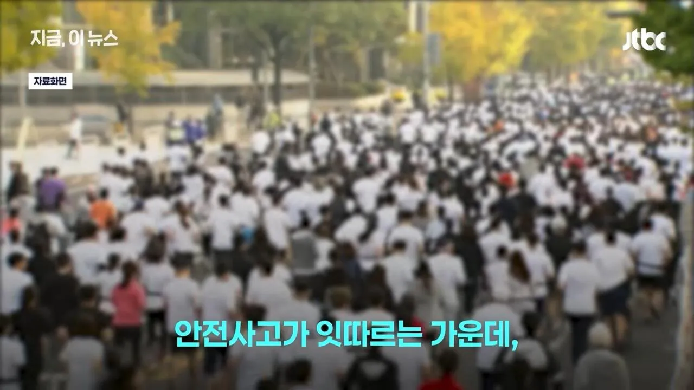
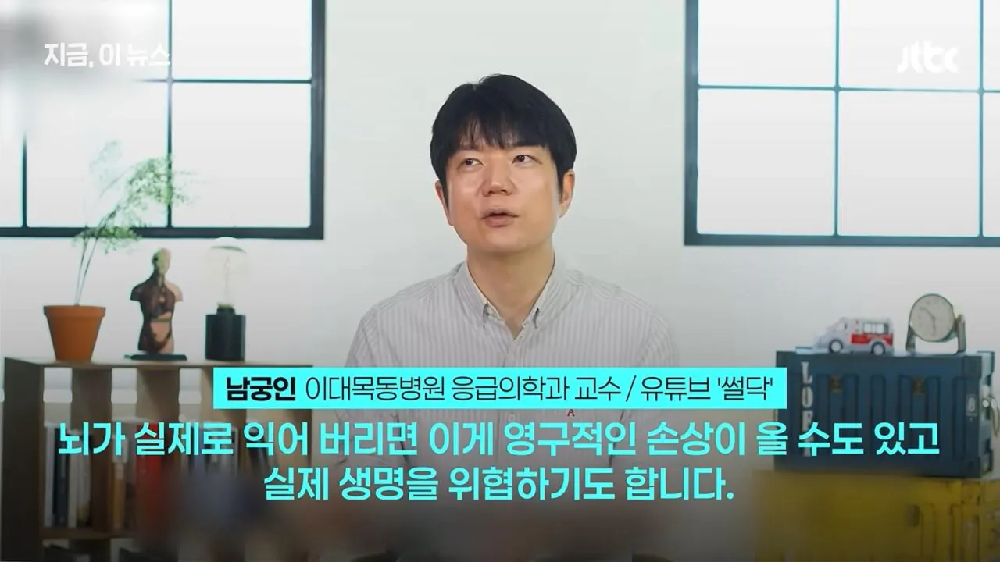
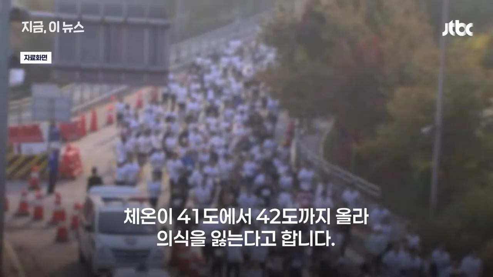
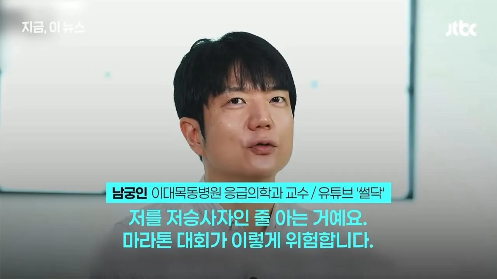
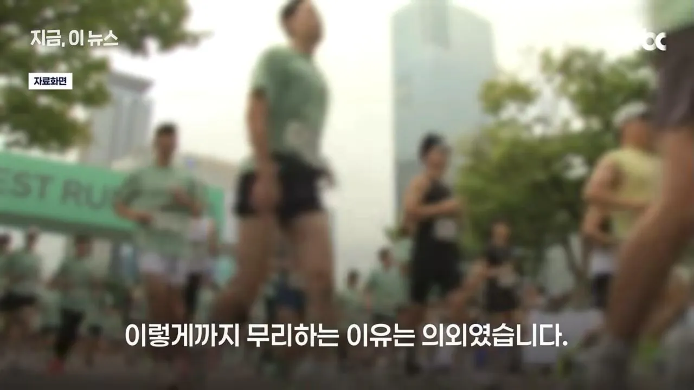
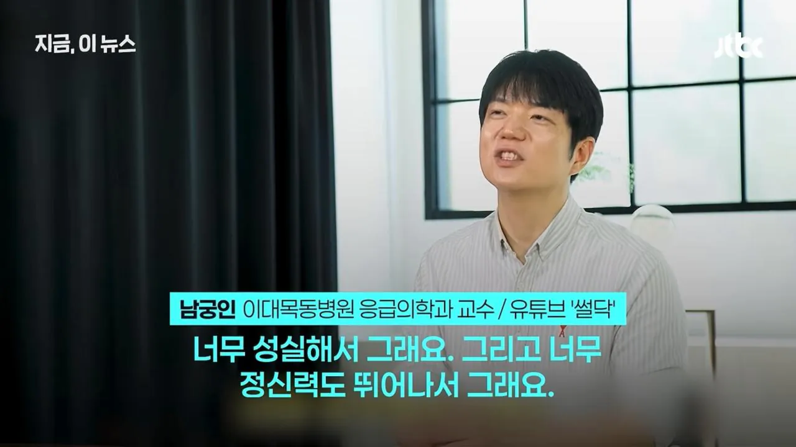
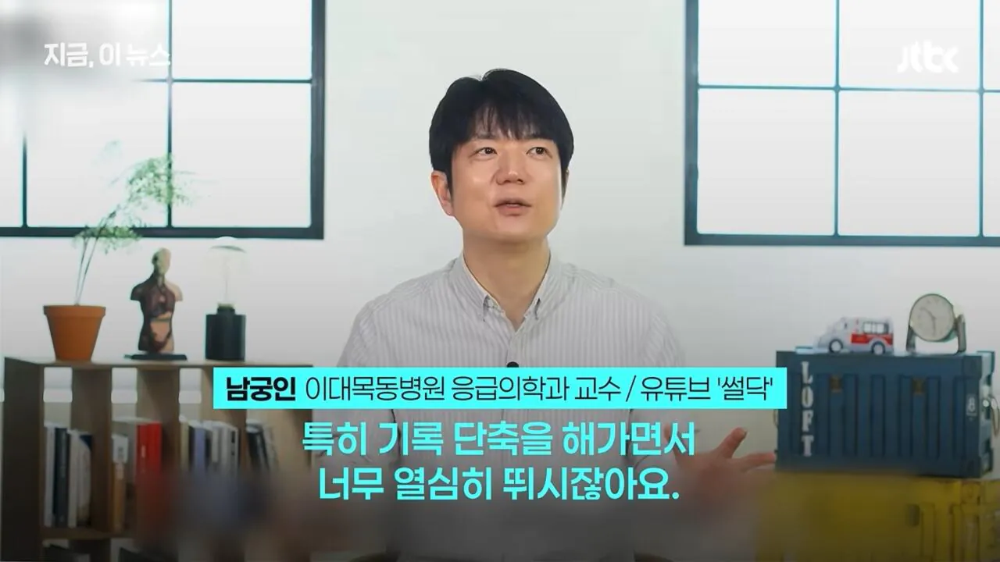
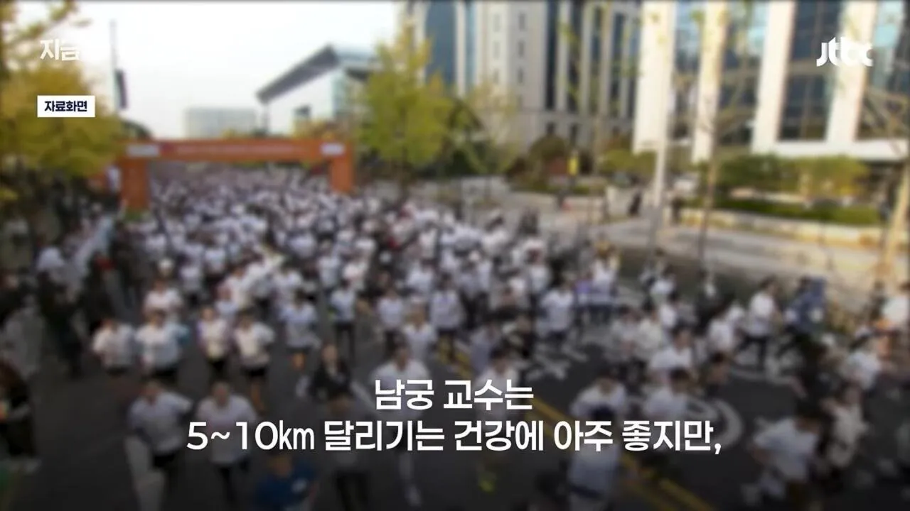
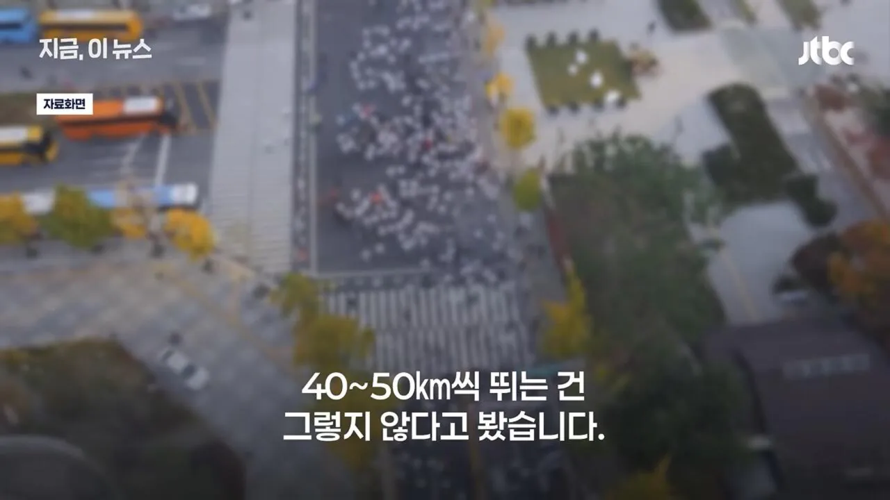

황영조: 직장 다니는 일반인이 기록 욕심까지 내며 마라톤을 뛰는 게 맞는가?









황영조: 직장 다니는 일반인이 기록 욕심까지 내며 마라톤을 뛰는 게 맞는가?
죽었어?
아테네의 군인이자 전령이었던 페이디피데스(Pheidippides)가 승전보를 전하기 위해 마라톤 전장에서 아테네까지 약 40km를 달려가 "우리는 이겼노라"를 외치고 쓰러져 숨을 거두었다는 전설에서 유래했습니다.
ㅇㅇ 죽었음
물론 갑옷다입고 미친듯한 정신력으로만 뛰어서긴해서
외국에 코어라고 온도센서 있던데 그런거 사서 껴야 할듯
인싸들의 롤 티어 같은거지 저 기록은 ㅋㅋㅋㅋㅋ 자존심 문제임
모두가 자신의 무가치함과 싸우고 있다
일부는 무가치함을 위해 싸우고 있다
나도 러닝하고, 이번 주에 마라톤 대회 나가지만 딱 하프까지만 나감ㅋㅋㅋ
ㄹㅇ 5km 딱 좋아 6분대로 천천히 뛰면 상쾌하고
5km를 6분만에 뛰면 뇌가 익기전에 심장과 관절이 터질것 같은데요
이게 달리기가 건강에 좋은 건 맞는데, 그것도 본인 체력에 맞게 적절한 수준에서 좋은 거지. 그냥 조깅만 딸깍하는 운동부족 30대 아재인 나는 20km넘어가기 시작하면 그냥 발목이랑 무릎에서 "아이고 개붕아 또 뭔 지랄이냐"하면서 힘든 게 아니라 아프기 시작함. 체력이 되는 분들이야 뭐 울트라 마라톤도 하지만, 난 풀 코스는 아직도 완주 못 해봄. 하프는 이제 여러번 해봤는데 그냥 매번 30km정도에서 아프다 하고 포기함.
운동부족아재???가 20키로오오오??
그분들은 200m만 뛰어도 발목이랑 무릎에서 "아이고 개붕아 또 뭔 지랄이냐" 함
아재컷 올리지마라...
2키로 걷는거도 힘든데 20키로 뛰고 운동부족이래... 진짜 운동부족이 뭔지 보여줘?
열사병이 주요원인이면 미군 훈련장처럼 얼음물 나두고 팔 집어넣어서 냉각 시키면 되잖아
안전대책이 미비한거 아님?
참가자들이 기록이 늦어진다고 안하지 않을까
개인 기록 깨려고 목숨까지 바치는 사람들이라 모르겠네
30 40 킬로 말하는거지 ? 50킬로까지뛰면 의미가 있어 ?? 마라톤이 42키로쯤인것같던대
우리나라 두바퀴 인식이 안좋아서 그렇지 마라톤 같은거보다 자전거나 수영이 진짜 장수운동임 관절에 무리도 안가고 정신건강에도 좋음.
자전거길도 진짜 잘 만들어 놨는데 인식이 너무 안좋아서 참 안타까울뿐
그리고 다 허세에 찌들어서 그렇지 자전거 비싸네 어쩌네 그런데 싸고 좋은거 널리고 널림 다 허세병임
자전거길로 사부작 다니면 뭐라 안하지
바로 옆에 자전거길 있는데 차도 내려가서 차 앞에서 댄스질하다가 빵 듣고 뻐큐질하니 지랄인거...
자전거는 생각보다 진짜 몸에 안좋음
특히 수족냉증 경증으로라도 가지고 있는 사란에게는 거의 독임.
이 소리ㅋㅋㅋㄱ
헬스 내려치고 러닝 올려칠때 쓰이던 논리 그대로임
수영이나 사이클은 저만치하면 몸에 좋을것같음?
달리기 진짜 왜하는지 모르겠음
구기종목 처럼 재미있는것도 아니고
헬스처럼 외형이 남는것도 아니고
단조롭고 지루한데
러너스하이 평생 느껴본적도 없고
마지막 줄로 증명했네
평생 느낄일없을듯 걍 살던대로 사셈
러너스하이를 느끼는게 존나 위험신호라더라
왜? 중독돼서?
몸이 위험감지해서 도파민뿜는거랑 비슷한거아님?
2번째 줄에서 결론이 났는데
3-5키러기 매일하긴 좋더라
하루 40키로 50키로 뛰는 새끼들은 미친놈들인가
슬슬 러닝인기가 줄어들거같은데 다음은 뭐가 유행하려나
뭐든지 건강하려고 하는거다 얘들아
우리나라 생활체육 자체가 그럼.. 마라톤만 그런게 아님
진짜 운동에 미친 새끼들 존나 많다ㅋㅋ 그만큼 잘하기도 하지만.. 어차피 선수할 것도 아니고....
아니다 운동뿐만 아니라 걍 우리나라 사람들 기질이 그런 것 같아
좋게 말하면 성실함이 근간에 있는 건데 기왕에 할꺼 한다면 하는 기질이 취미영역에도 있음
애초에 마라톤은 병사가 42km 뛰어와서 승전을 알리고 죽었다는 거에서 유래한건데, 42km 뛰고 건강하기를 바라면 문제가 있지